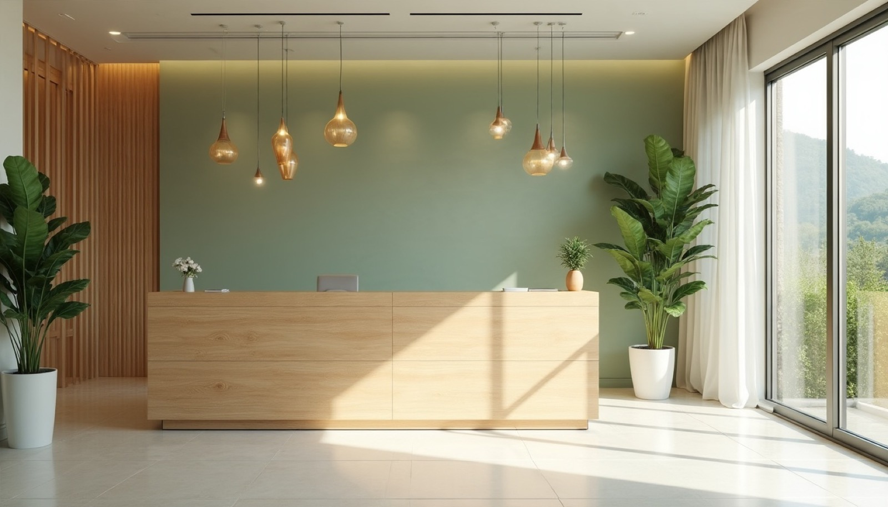
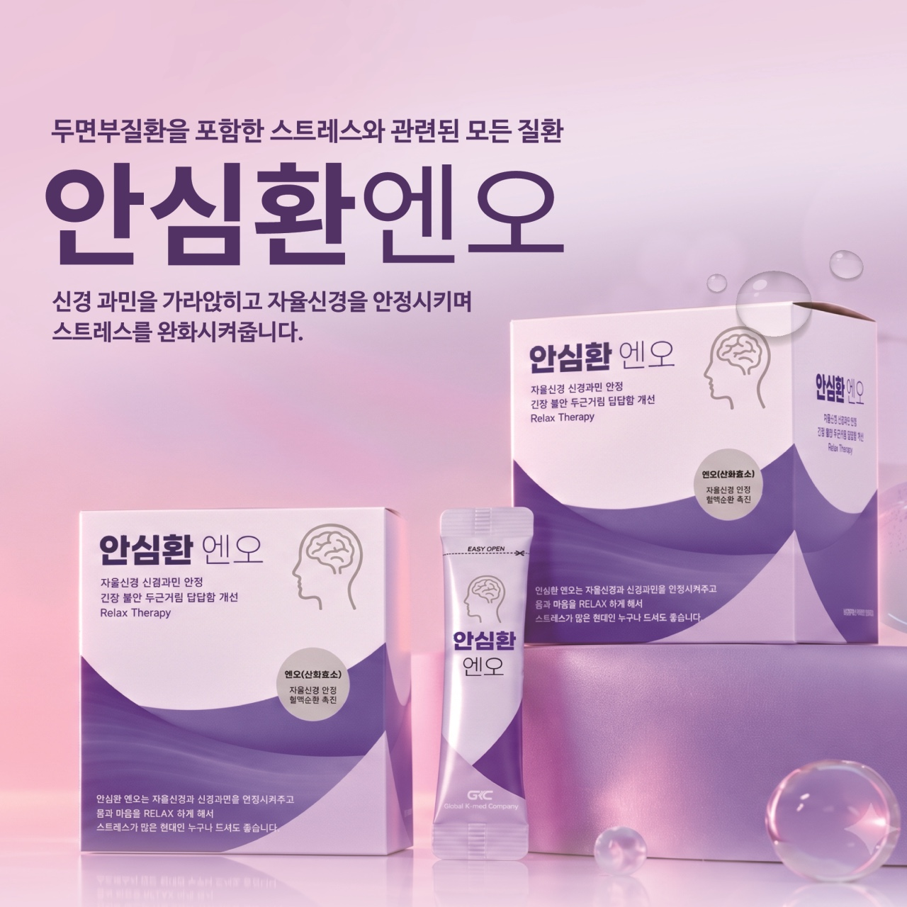
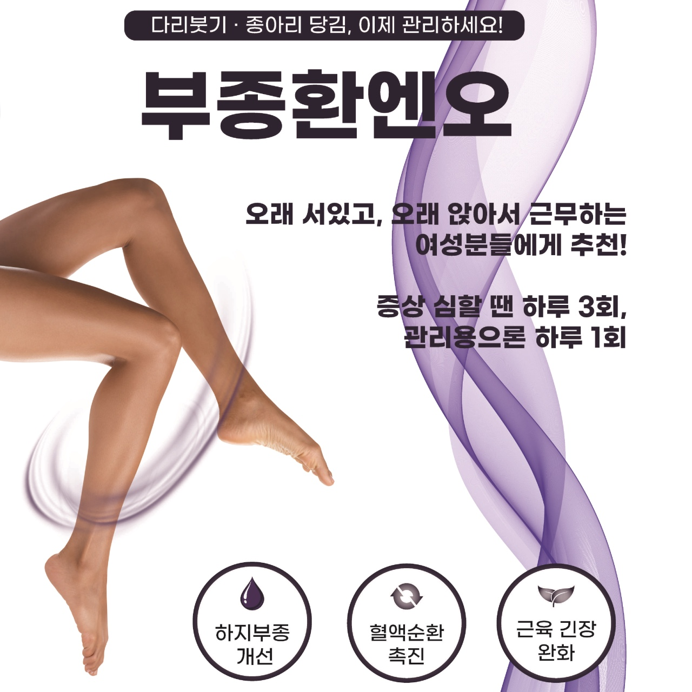

엔오처방
각각의 처방은 구성과 복용 방법이 다릅니다. 진찰 후 상태에 맞는 것을 안내해 드립니다.
보폐고 엔오
숨 쉬는 일상을 위한 처방
 긴장 · 스트레스 · 수면
긴장 · 스트레스 · 수면
안심환 엔오
차분한 하루를 위한 처방

붓기 · 순환부종환 엔오
가벼운 하루를 위한 처방

공진단활력 · 해울 공진단
기운을 뿌리부터 채우는 활력공진단.
예민한 분께는 해울공진단.
※ 치료 효과와 경과는 개인에 따라 다를 수 있습니다. 이 페이지는 일반적인 안내이며, 실제 치료는 진찰 후 개인별로 안내드립니다.
진료 원칙
충분히 듣고, 직접 진찰합니다
증상뿐 아니라 생활 습관과 걱정까지 듣고, 원장이 직접 진찰합니다.
개인별로 구성해 원내에서 달입니다
진찰 결과에 맞춰 약재를 구성하고, 한의원 안에서 직접 달여 조제합니다.
영상으로 확인하고 설명드립니다
초음파로 부위를 확인하고, 치료 방향과 기간, 관리법을 알기 쉽게 설명드립니다.

원장 최 솔
- 경희대학교 한의과대학 졸업
- 횡성군보건소 한방진료과장
- 경희대학교 침구경락센터 협력 한의사
- 한국한의학연구원 임상연구협력 한의사
- 국민건강보험공단 장기요양등급판정위원
- N약침 초음파 유도하 약침 정규과정 수료
- 제중학회 학술부회장
- 한방비만학회 회원
- 대한스포츠한의학회 회원
- 前) 으뜸경희한의원 진료원장
- 前) 365경희솔한의원 대표원장
자주 묻는 질문
진료시간은 어떻게 되나요?
월·화·수·금요일은 09:30~20:00(점심시간 12:30~14:00), 목요일은 14:00~20:00, 토요일은 09:30~13:00(점심시간 없음)입니다. 일요일과 공휴일은 휴진입니다. 휴진 일정이 바뀔 수 있어 방문 전 전화(02-355-4517)로 확인하시면 가장 정확합니다.
위치와 가는 방법, 주차는 어떻게 되나요?
서울 은평구 진관4로 47, 은평뉴타운 상림마을 708동 상가 115호(708동 상가 1층)에 있으며 지하철 3호선 구파발역 인근입니다. 네이버지도·카카오맵에서 '구파발경희한의원'을 검색하시면 길 안내를 받으실 수 있습니다. 708동 지하주차장에 무료로 주차하실 수 있습니다.
예약 없이 방문해도 되나요?
방문은 가능하지만 초음파 가이드 약침이나 초음파 성장 검사는 확인과 준비에 시간이 더 걸려 사전 예약을 권해 드립니다. 네이버 예약 또는 전화 02-355-4517로 문의해 주세요.
진료시간 · 오시는 길
진료시간
| 월 · 화 · 수 · 금 | 09:30 – 20:00 | |
|---|---|---|
| 목 | 14:00 – 20:00 | 오후 진료 |
| 토 | 09:30 – 13:00 | |
| 일 · 공휴일 | 휴진 | |
| 점심시간 | 12:30 – 14:00 (토요일은 점심시간 없음) | |
궁금한 점은 편하게 문의해 주세요
진찰 후 상태에 맞는 방법을 설명드립니다.